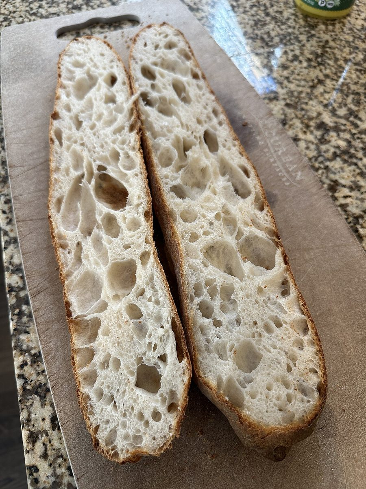

回路02
店のこと
確認できているのは、所在地・電話番号・Instagramのアカウントです。
確認できていること
- 店名は「セボン」、業種はパン屋(ベーカリー)
- 所在地は青森県青森市荒川松尾38-1(〒030-0111)
- 電話番号は090-5356-9298
- InstagramはアカウントID cestbon911
- 営業時間・定休日・メニュー・価格・ご予約・駐車場は準備中

制作側の連想
分電盤を、パン屋さんの一日に見立てて。
このサイトの「配電盤の五つのスイッチ」は、制作側の連想で、お店の理念・由来とは無関係です。お店の様子や考えを示すものではありません。屋号の意味も分かりません。5ページをブレーカーのつまみに見立て、いま開いているページだけが「入」になる作りにしました。